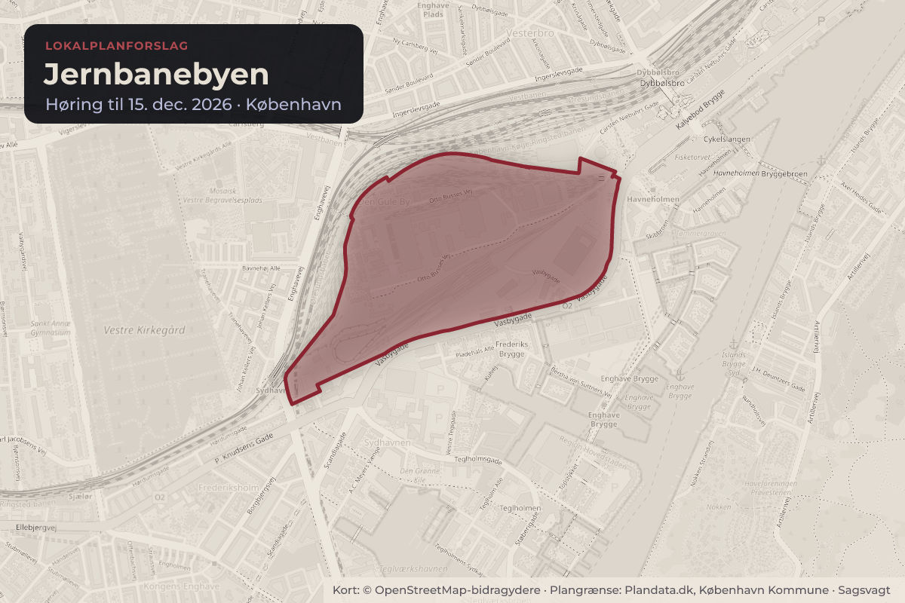
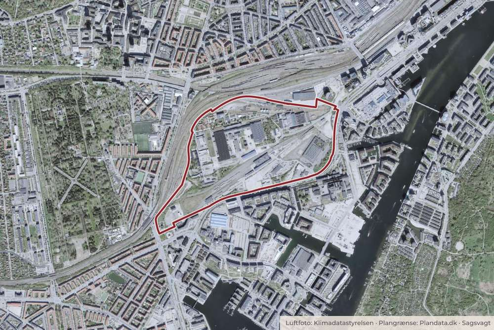

På dagsordenen 26. november, Kongens Enghave Lokaludvalg
Høring: Revideret forslag til lokalplan for Jernbanebyen

Kort: © OpenStreetMap-bidragydere. Plangrænse: Plandata.dk, København Kommune.

Kort fortalt
- Forslaget
- Lokaludvalget drøfter høringen og bemyndiger Bymiljøudvalget til at udarbejde og indsende et kort høringssvar
- Hvem
- Kongens Enghave Lokaludvalg
- Hvornår
- Torsdag 26. november 2026
- Status
- På dagsordenen. Sagen behandles på mødet.
- Næste skridt
- Bymiljøudvalget indsender høringssvaret inden fristens udløb den 15. december 2026.
Er noget forkert her? Skriv til os
Hvad kan du gøre?
- Mød op
- Lokaludvalgets møder er som regel åbne for alle i bydelen. Sagen behandles torsdag 26. november 2026.
Læs hele sagen Kommunens egen tekst
Indstilling
Det indstilles,
1. at lokaludvalget drøfter høringen og bemyndiger Bymiljøudvalget til at udarbejde og indsende et kort høringssvar
Problemstilling
Borgerrepræsentationen besluttede den 8. oktober 2026 at sende et revideret forslag til lokalplan for Jernbanebyen med tilhørende kommuneplantillæg og miljøvurderinger i otte ugers offentlig høring.
Lokalplanforslaget har tidligere været i høring i efteråret 2024, hvor Kgs. Enghave Lokaludvalg afgav et høringssvar. Efterfølgende har det været nødvendigt at revidere forslaget, særligt som følge af Banedanmarks indsigelse vedrørende støj fra jernbanens arbejdsarealer. Der er desuden indarbejdet en række andre ændringer, blandt andet på baggrund af den tidligere høring.
Hovedstrukturen i lokalplanforslaget er fastholdt. Planen muliggør ca. 520.000 etagemeter ny bebyggelse i Jernbanebyen, der skal udvikles til et blandet byområde med boliger, erhverv, skole, daginstitutioner, kultur- og fritidsfaciliteter samt grønne områder.
De væsentligste ændringer i det reviderede forslag vedrører:
• Støj: Nye erhvervsbygninger og et parkeringshus langs Otto Busses Vej skal fungere som støjafskærmning mod Banedanmarks kommende arbejdsbase.
• Skole og kultur: Der gives mulighed for yderligere 3.000 m² bebyggelse i det nordlige område til skole og kulturelle funktioner i Vognværkstedet.
• Bygninger og byrum: Der er indarbejdet ændringer i blandt andet bebyggelsesstruktur, bevaringsværdige bygninger og beplantning på baggrund af den tidligere høring.
• Borgerrepræsentationen har desuden tiltrådt, at forvaltningerne frem mod den endelige behandling skal fremlægge en plan for realisering og finansiering af en sammenhængende gang- og cykelforbindelse fra Ingerslevsgade gennem Jernbanebyen og over metroens klargøringscenter.
Se Borgerrepræsentationens beslutning den 8. oktober 2026:
https://www.kk.dk/dagsordener-og-referater/Borgerrepr%C3%A6sentationen/m%C3%B8de-08102026/referat/punkt-5
Høringsmaterialet kan findes på Bliv Hørt Portalen: Via dette link
Vesterbro Lokaludvalg har afholdt et borgermøde om den reviderede lokalplan den 10. november 2026 og vil afholde et borgermøde mere den 24. november 2026.
Det indstilles, at Bymiljøudvalget bemyndiges til at afgive et høringssvar inden fristen den 15. december 2026.
Løsning
Lokaludvalget bemyndiger Bymiljøudvalget til at udarbejde og indsende et høringssvar.
Økonomi
Intet
Videre proces
Bymiljøudvalget indsender høringssvaret inden fristens udløb den 15. december 2026.
Kilde: Københavns Kommune, Kongens Enghave Lokaludvalg, dagsorden fra mødet torsdag 26. november 2026, punkt 5. Læs den originale sag hos kommunen.
Steder i sagen: Jernbanebyen